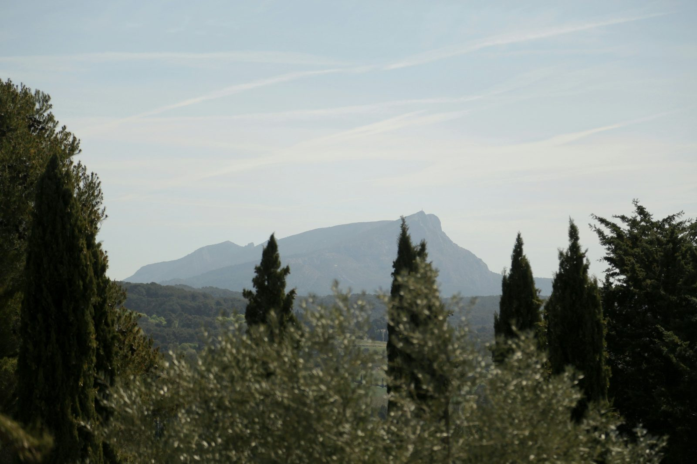
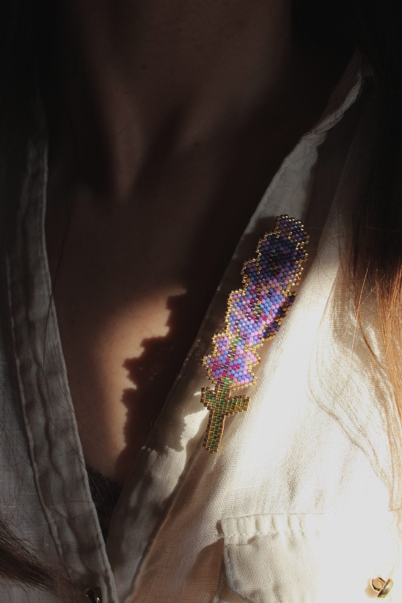
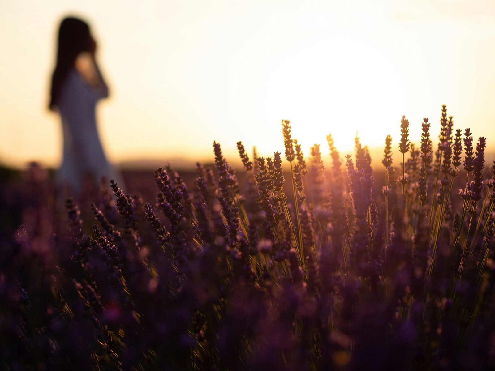
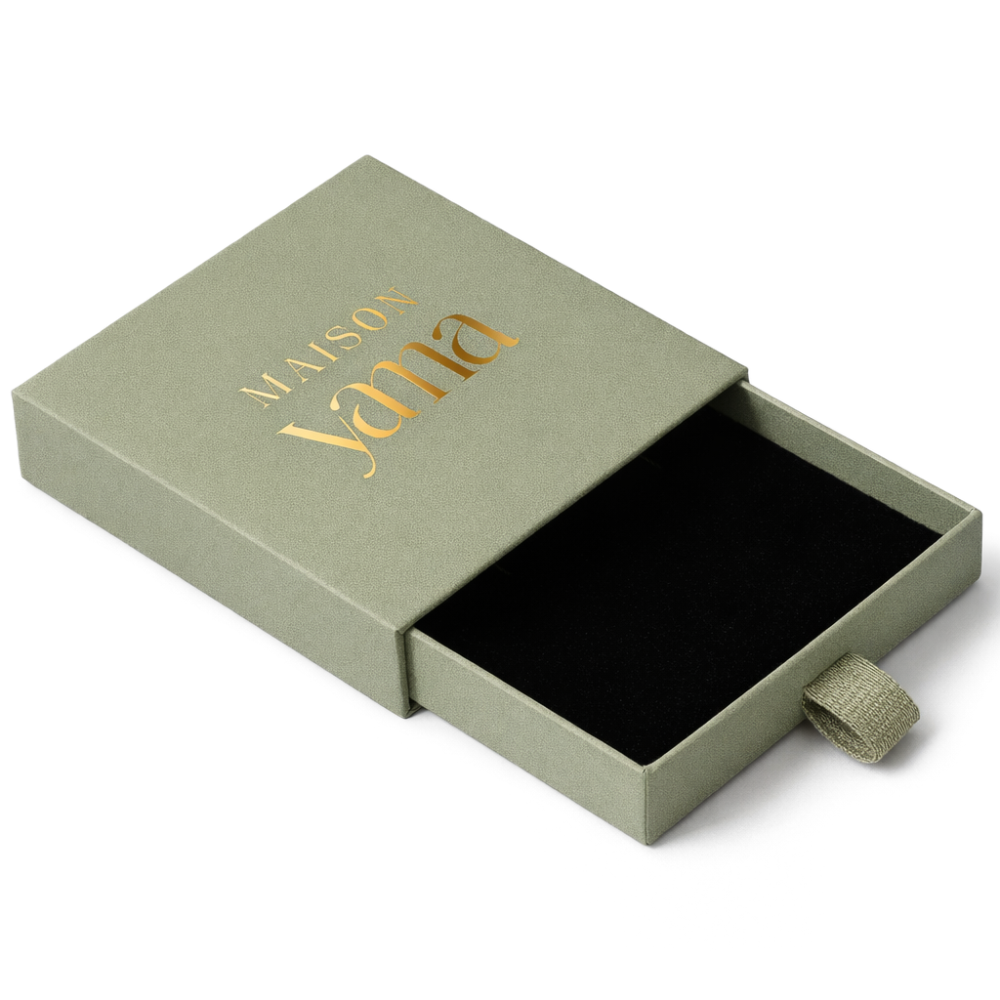

Au Castellet-en-Luberon, entre les rangs de lavande et le chant des cigales.
Maison Yama est née d'un attachement profond aux paysages de Provence — de l'envie de retenir, le temps d'une broche, ce que la lumière y fait au vivant.
Une cigale posée sur une pierre chaude, un rouge-gorge dans l'amandier, la lavande qui plie sous le vent. La maison collectionne ces instants avant de les traduire.
De retour à l'atelier, les couleurs sont choisies de mémoire — puis vient le tissage, perle après perle.

Regarder longtemps avant de dessiner. Les formes, les couleurs et les postures viennent du vivant, jamais du catalogue.
Un geste précis ne se presse pas. Chaque pièce demande des heures de tissage — et les prend.
Tissée main, chaque broche porte de légères variations — la signature discrète de celle qui l'a faite.

« Retenir la lumière du Luberon,
le temps d'une broche. »
Chaque broche quitte l'atelier dans son écrin vert amande frappé d'or — prête à offrir, ou à se faire offrir.
